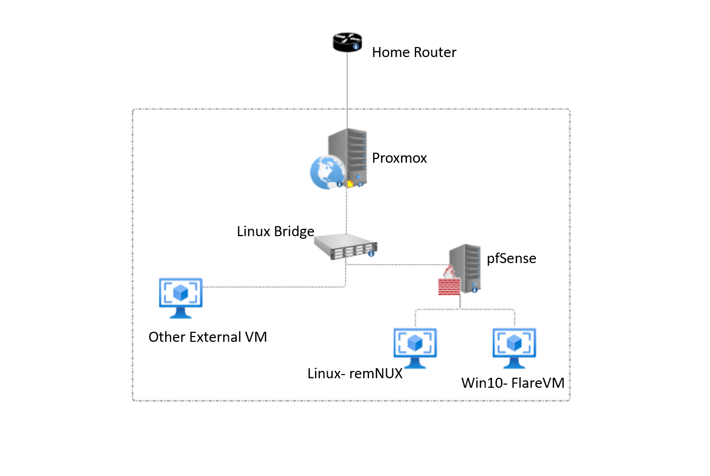

Published on: November 30, 2023
Before I dive into what my labs topology looks like and other detailed specifications, I will first explain what Proxmox is for some of the readers who might not know.
Proxmox is an open-source Virtual Enviorment platform that combines two virtualization technologies: KVM's (Kernel-based Virtual Machine) for virtual machines and LXC's (Linux Containers) for lightweight container-based virtualization. Since it is a type-one hypervisor, We will be able to really dive into some of the more advanced functionalities in the lab.
Below is a topology of my Lab.
In the topology, I have my Proxmox enviorment set up in the dotted box. In my physical enviorment, I have a dedicated used corporate Desktop that I found on amazon for maybe $100 + tax. This Desktop is plugged into my home router via ethernet. Moving on, Proxmox has a very nice feature called a Linux Bridge, which essentially just acts as its own virtual switch. I have my actual Malware Analays Enviorment to the right of the Linux Bridge. From the bridge I am able to assign VLANs to the VMs hooked up to said Linux Bridge. All VMs attached directly to the Bridge are assigned their own IP address on my home network To the right is my acutal Malware Analaysis Lab enviorment, and to the left are other projects I am working on in the future. Following the line down is a VM called pfSense, which is a firewall that manages the traffic flowing in and out of my Malware Infected Enviorment.
In short, pfSense is a open-source firewall and router software based on FreeBSD. It has a very powerful/ customizable platform for managing and securing networks that offers loads of features and functionalities (we will dive into this soon). Whats nice about pfSense is its community forums for guidance as it is used in both home and enterprise enviorments, so you can find the answer to pretty much any issue/question you might face.
One step below our pfSense firewall are 2 VMs, remNUX and FlareVM. Both of these VMs allow us to do whats called Static and Dynamic Analysis on any malware sample we throw at it. More on this below.
Some Random stuff